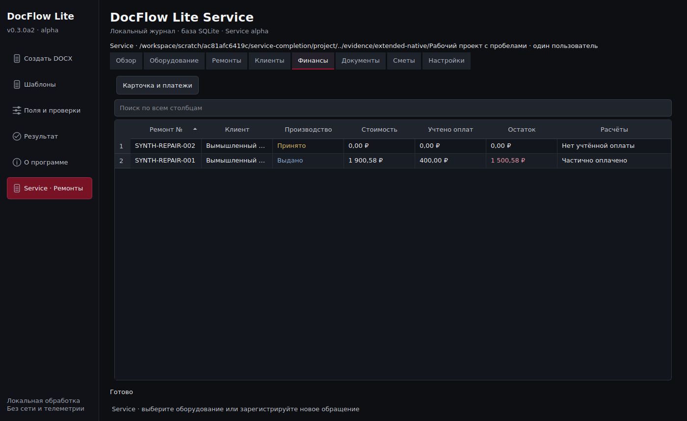

Оборудование и история
Постоянный номер оборудования отделён от номера ремонта. Новое обращение сохраняет прошлую историю.
DOCFLOW LITE SERVICE Подготовительная alpha 0.3.0a2
Оборудование, история ремонтов, дефектовка,
расчёты и документы Word — в одном рабочем пространстве.
Service разрабатывается в отдельной ветке и не входит в публичный Release v0.1.1. Подготовительная версия предназначена для проверки владельцем, а не для неподтверждённого промышленного внедрения.
ОДИН ПРОДУКТ. НОВОЕ НАПРАВЛЕНИЕ.
Для мастерских, сервисных центров и ремонтных подразделений предприятий. Модуль работает локально с SQLite, без обязательной облачной регистрации.
Постоянный номер оборудования отделён от номера ремонта. Новое обращение сохраняет прошлую историю.
Жалобы, комплектация, согласование, работы и запчасти. Производственный статус показывается отдельно от задолженности.
Точная арифметика, дробное количество, частичная оплата и возврат. Только внутренний учёт — без банковских операций и чеков.
Локальные вложения и версии DOCX с таблицами переменной длины. Проверяемая резервная копия включает базу и связанные файлы.
РАБОЧИЙ ПРОЦЕСС
ПОДГОТОВИТЕЛЬНАЯ ВЕРСИЯ
Ниже — настоящий интерфейс Linux/Qt на полностью вымышленных данных. Это не снимок Windows-компьютера заказчика.

ИНДИВИДУАЛЬНОЕ ВНЕДРЕНИЕ
Настройка Service под процессы предприятия. Окончательные объём, цена и срок определяются после изучения задачи и согласования пилота.
Формы документов, структура журнала, перенос согласованного формата и обучение — в согласованном объёме. Подписка и автоматическая оплата не подключены.
Правовые вопросы обработки данных и условия внедрения согласуются отдельно. Реальные клиентские базы через сайт не принимаются.
Нужна только генерация Word из Excel? Core: бесплатная программа и настройка от 5 000 / 9 000 ₽ ↗
ВОПРОСЫ О SERVICE
Мастер XLSX/CSV позволяет выбрать лист и колонки, проверить даты, позиции и суммы, вручную связать аппараты и клиентов или отложить строки. Выбранные ремонты импортируются одной транзакцией; повторный импорт сверяется с источником. Номер старого ремонта не считается номером аппарата. Таблицы Word сначала преобразуются в CSV с координатами для ручной проверки.
База, документы и вложения находятся на локальном компьютере. Интернет нужен отдельно для скачивания и переписки, а не для локального ведения ремонта.
В Service каждому обращению соответствует отдельная запись, связанная с постоянной карточкой оборудования. Архивация не удаляет историю.
В подготовительной версии поддерживаются PNG/JPEG, локальные MP4 и безопасные DOCX. Изображения можно явно включить в приложение к акту. Видео открывается отдельным файлом.
Восемь видов DOCX: приёмка, выполненные работы, дефектовка, карточка ремонта, передача, предварительная и окончательная сметы, универсальный гарантийный прототип. Можно выбрать изображения, их порядок, подписи и этапы. Гарантийный срок и подписи программа не назначает; формы согласуются перед внедрением.
Да, с ограниченными переменными и маркерами строк Service. Произвольные выражения и макросы не исполняются. Сложные объединённые таблицы требуют адаптации.
Предварительный черновик отделён от фактических работ. Сохранённые версии неизменяемы; согласование отмечается вручную с автором и основанием. Работы, запчасти, доставка, прочие расходы и скидки учитываются отдельно. Задолженность рассчитывается по фактическим позициям и внутренним записям оплат. CSV предназначен для ручного переноса в учётную систему, без интеграции с 1С.
Локальный профиль хранит проверенные реквизиты, контакты, префикс нумерации, названия статусов, собственные шаблоны и выбранный логотип. Данные и файлы включаются в резервную копию. Для логотипа требуется подтверждение права использования.
Текущий Core бесплатен. Для Service обсуждается индивидуальное внедрение; фиксированная лицензия, подписка и платёжный шлюз не введены.
Первая версия рассчитана на одного пользователя и одну локальную базу. Совместная сетевая работа, роли и облачная синхронизация не реализованы. Не используйте общую SQLite-базу на сетевой папке.
НАЧНЁМ С ОПИСАНИЯ ЗАДАЧИ
Напишите, как вы ведёте ремонты и какие документы нужны. До согласования канала не присылайте реальные клиентские данные и рабочую базу.
Кнопка открывает контакт с подготовленным текстом. Сообщение отправляете вы сами; сайт заявку не отправляет.
Сбор через форму и онлайн-оплата отключены. Индексация остаётся выключенной. Service пока не опубликован отдельным официальным Release.